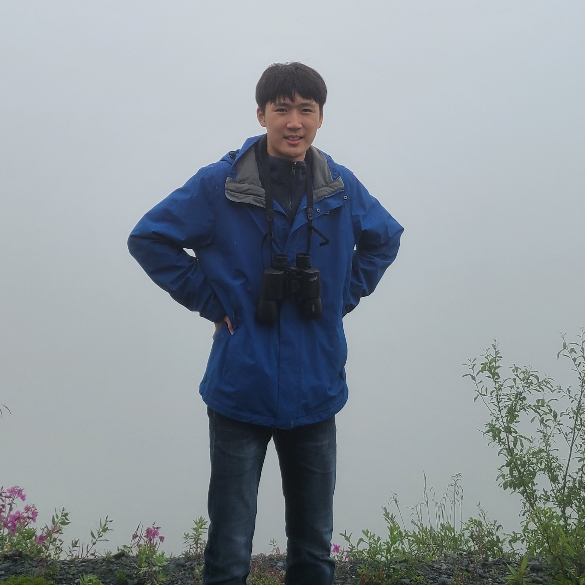
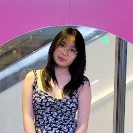
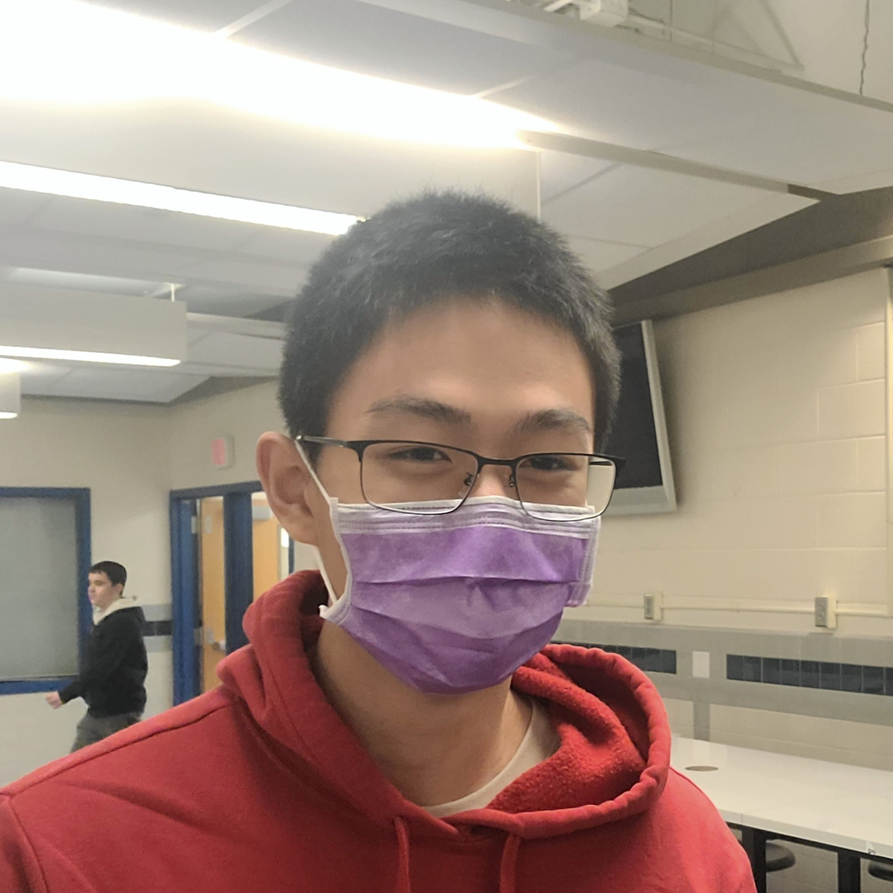
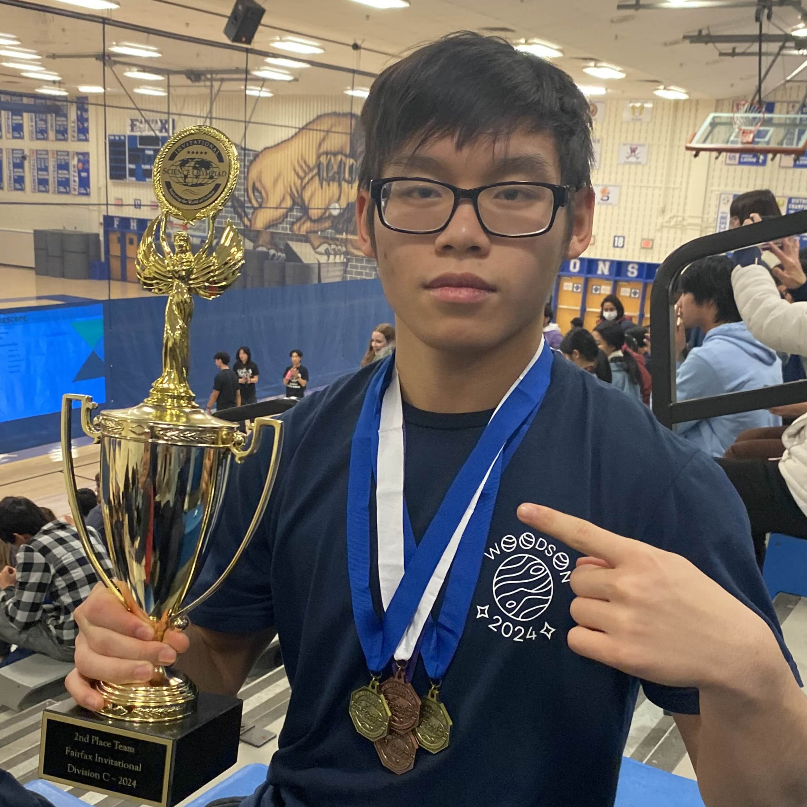
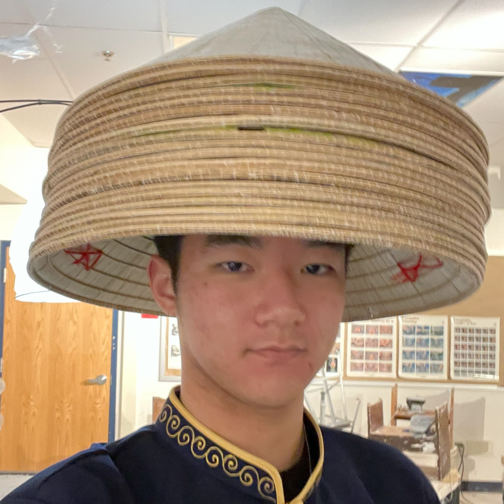
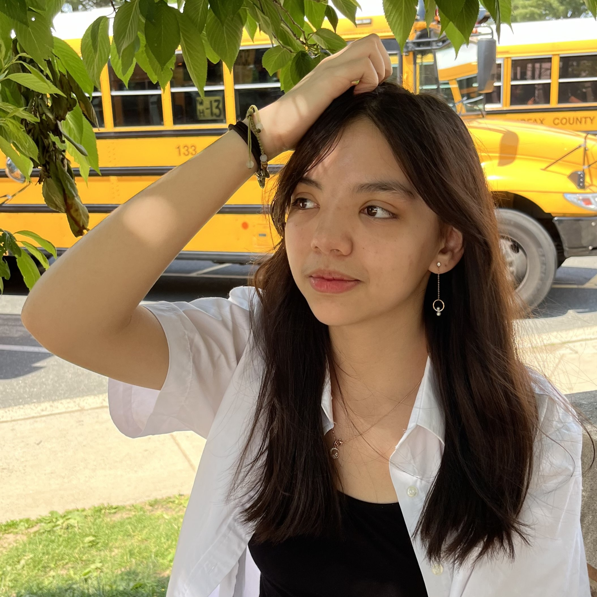

Andrew Kim, President

Hi, I'm Andrew, a senior on my fourth year as a Science Olympiad competitor. WSO has been a place for me to reach my fullest potential while working the smartest people in the school. My favorite moments in high school have been with my scioly team, and I aim to make WSO a place where people have unforgettable and fulfilling experiences, just like it is for me. If I had to choose, my most memorable experiences were when the team threw a surprise birthday party for me, and when we got 1st at Regionals. As for events, my best include Codebusters and Robot Tour, but I'll always insist that Fermi questions is the greatest scioly event of all time. In my free time, I like coding, running, listening to indie music, and reading Frank Herbert.
Jamie Kim, Vice President

Hey there! I'm Jamie, and as a junior, it's my 4th year participating in Science Olympiad. During meetings, you can find me diligently working away at the Life Science events, trying my best not to destroy the builds, and occasionally (or often) catching a nap on Mrs. Babcock's couch. Science Olympiad is one of my greatest passions; from pulling all-nighters to perfect my binder events to hanging out with friends after competitions, I truly enjoy every aspect of it. Outside of Science Olympiad, I love learning about all things biology, listening to Lauv, and destroying food while baking. I am excited to bring my experience and enthusiasm to the team, ensuring that our journey this year is both successful and memorable. Let's make this year the best one yet!
Matthew Lee, Build Captain

I'm a senior interested in electrical engineering and aerospace engineering! I spend my free time either putting together or flying FPV drones for fun, or for projects. I typically spend most of my time in scioly building my 5in notes binders for hybirds or trying to find the next workaround for my build events.
Nick Tong, Secretary

I'm a senior who loves build and earth science events, specifically Dynamic Planet and Air Trajectory. I initially joined Science Olympiad in my sophomore year, and it has been a wonderful avenue to connect with others while exploring the sciences. Each year, I set ambitious academic goals, particularly focused on the realm of science. Woodson Science Olympiad provides the perfect environment for me to challenge myself and grow. The supportive team that surrounds me shares these same goals, making it an inspiring and nurturing experience. When I am not working on Science Olympiad, in my free time, I enjoy wrestling, weightlifting, and drumming to music. I am excited for what the next season will bring and hope we have another wonderful season.
James Kim, Parent Liaison

Hi! I'm James, and I'm a senior with a deep interest in life science. I'm especially passionate about agricultural science and hope that an agsci event will be added to the permanent SciOly rotation in the near future. I first experienced Science Olympiad in 7th grade, and after a brief hiatus during 8th grade distance learning, I returned to it during my freshman year and have continued on with it since then. My favorite event from the past season was Forestry, and I continue to identify trees on my walk home after school. As Parent Liaison, I hope to boost parent involvement in Science Olympiad and help organize finances to provide WSO members with even more opportunities and meaningful experiences. In my free time, I likes to practice tree ID, play games with my friends, and dream about the day when a cure for sleep is finally developed.
Morgan Altier, Logistics Officer

Hello! I'm Morgan, and I'm a senior who loves math and science and staying up late for no reason. It's my third year doing Science Olympiad, and I've loved it ever since I started sophomore year. My favorite thing about scioly is the fun and supportive community. In my free time, you can find me listening to music, solving puzzles, crocheting, and playing bass. I'm looking forward to this year in scioly and what it has in store !
Contact Us
Contact the officers at woodsonscioly@gmail.com and follow us on Instagram at @woodsonscioly! Or, you can DM Andrew on Discord at .expectation.